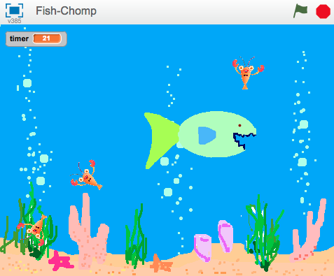
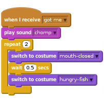

Cá bắt mồi
Cấp độ 2
Chúng ta sẽ làm trò Fish Chomp! Điều khiển con cá lớn đang đói và cố gắng ăn hết những con mồi bơi xung quanh.

Hãy làm con cá đang đói bơi xung quanh biển
choose background from library. Cuối cùng, bỏ backdrop1Click vào biểu tượng lá cờ màu xanh.
Di chuyển con trỏ chuột xung quanh biển. Con cá có đi theo con trỏ không?
Chuyện gì sẽ xảy ra nếu bạn không di chuyển con trỏ chuột và con cá theo kịp nó? Trông con cá lúc đó thế nào? Và tại sao nó lại làm như vậy?
distance to trong bảng Sensing).Nếu bạn muốn, bạn có thể cho số khác nhau vào lệnh. Việc này có ảnh hưởng gì đến việc di chuyển có con cá? Thay đổi khoảng cách lên số lớn( VD: 100), hoặc số nhỏ hơn (VD: 1). Thay đổi số lần di chuyển của con cá lên số lớn (VD: 20), hoặc nhỏ (VD: 1 hoặc 0).
Đã đến lúc làm gì đấy cho con cá ăn rồi!
Shrink (ở trên Stage) để làm hình họa nhỏ hơn.Click vào biểu tượng lá cờ màu xanh rồi xem những con mồi di chuyển. Chúng có bơi như bạn mong muốn? Chúng có thực sự đang bơi?
Tại thời điểm này, con hungry Fish và những con mồi chưa có tương tác, chúng ta sẽ làm việc này trong bước sau.
pick randomIf on edge, bounce có tác dụng gì? Bỏ nó đi và xem chuyện gì xảy ra.Bây giờ chúng ta muốn làm con cá ăn những con mồi! Một khi con cá bắt được mồi trong miệng nó, hai việc cần xảy ra:
touching để xem liệu nó có chạm vào con cá không.Thử lại trò chơi - bạn có gặp vấn đề gì không? Hãy để ý, con mồi có thể biến mất dù nó chạm vào bất kì bộ phần nào của con cá. Vì thế, con cá có thể đứng yên đợi 3 giây để con mồi xuất hiện lại rồi ăn nó tiếp. Như vậy không công bằng!
touching color, và xem nếu con mồi chạm vào răng màu xanh của con cá không. Để làm việcnaày, bỏ khối touching và thay bằng touching color trong lệnh cũ, chọn màu trong khối và click vào răng con cá.go to, và cho nó một giá trị x và y ngẫu nhiên.Thử chơi lại trò chơi – Con mồi có biến mất chỉ khi nó chạm vào miệng con cá không? Và nó có xuất hiện trở lại tại một điểm bất kì thay bằng tại điểm nó bị ăn không?
broadcast chỉ ra việc con mồi đã bị ăn trước khi biến mất.Bây giờ chúng ta cần con cá phản hồi lại bằng việc tạo ra âm thanh và ngậm hàm lại.
broadcast của con mồi. Đoạn lệnh này cần làm con cá tạo tiếng động và chuyển sang hình mouth-closed, đợi một lúc rồi chuyển đổi trở lại.
Bây giờ Hungry Fish đã sẵn sàng đi ăn mồi, hãy phủ đầy con mồi trong nước biến. Click chuột phải vào hình họa con mồi và nhấn "Duplicate" vài lần.
Click biểu tượng lá cờ màu xanh.
Con cá có ăn mồi không? Và nó có ăn các con mồi khác nhau không?
Tại sao chúng ta cần thêm khối show để bắt đầu dòng lệnh cho con mồi? Nghĩ xem chuyện gì sẽ xảy ra nếu con mồi bị ăn, sau đó trò chơi dừng lại trước khi tiếp tục. Chuyện gì sẽ xảy ra nếu trò chơi bắt đầu lại?
Tốt lắm! Bạn đã hoàn thành trò chơi cơ bản. Có nhiều thứ khác bạn có thể sáng tạp với trò chơi này. Bạn có sẵn sàng thử thách?
Hiện tại, tất cả các con mồi đều di chuyển cùng chiều. Bạn có thể làm một con trong số chúng di chuyển khác đi? Gợi ý: Không cần dành quá nhiều thời gian cho việc này mà bỏ qua những hoạt động khác trong dự án.
Chọn một con mồi để thử nghiệm. Nếu chúng có cùng vẻ ngoài, làm chúng khác đi bằng cách thay đổi màu sắc với khối set color effect. Bằng cách này, bạn có thể phân biệt chúng với những con còn lại.
Làm con mồi này bơi chậm hơn các con khác. Gợi ý: Nhìn vào khối move 2 steps.
Con mồi có di chuyển chậm hơn không? Việc này có làm trò chơi thú vị hơn không?
Nếu bạn làm được việc đó, hãy thử làm một con mồi di chuyển nhanh hơn các con mồi khác.
Con mồi vẫn di chuyển như bình thường chứ? Những thay đổi này có làm trò chơi thú vị hơn không?
Gợi ý: Nếu con mồi bơi quanh vòng tròn, kiểm tra lại giá trị của khối pick random trong khối turn.
Bạn nghĩ sao về việc làm mỗi con mồi di chuyển khác nhau bằng cách kết hợp những thay đổi trên?
Những thay đổi này có làm trò chơi hay hơn, thú vị hơn, khó hơn hay dễ hơn không?
Những con mồi trong trò này rất ngu xuẩn! Chúng chỉ bơi xung quanh cho đến khi bị ăn. Những con mồi thật thường bơi xa khỏi kẻ thù của chúng. Hãy làm con mồi chạy khỏi Hungry Fish
Không có khối nào trong Scratch cho bạn biết trước đường đi của hình họa. Nhưng bạn có thể làm một hình họa chỉ về phía một hình khác, sau đó làm nó quay đi hướng khác. Nhứng khối bạn cần nằm trong bảng Motion.
Với ý tưởng này, làm một con mồi quay đầu ra hướng khác con cá.
Bạn có thể thấy những con mồi bị kẹt ở góc nếu chúng luôn bơi ra khỏi con cá. Bạn muốn con mồi chỉ bơi đi xa khi con cá lại gần. Gợi ý: xem lại cách chúng ta dùng khối distance to.
Việc này có khiến việc bắt mồi khó hơn không? Nó có làm trò chơi tốt hơn không?
Chỉ ăn mồi là chưa đủ. Làm thế nào để bạn biết bạn chơi tốt hơn người khác? Bạn cần tìm cách ghi lại điểm số, nên hãy thêm bảng ghi điểm. Nhìn vào Keep score scratch card để xem cách làm.
Bạn nên để ô ghi điểm ở đâu?
Đảm bảo điểm số về 0 lúc bắt đầu trò chơi. Bạn nên để khối đó ở đâu?
Điểm số có về 0 lúc trò chơi bắt đầu không? Điểm có tăng dần mỗi khi con cá ăn mồi?
Giới hạn thời gian cho trò chơi. Bạn có thể ăn bao nhiêu mồi trong 30 giây?
Nhìn vào Timer scratch card để xem cách thêm bảng tính thời gian. Bắt đầu với 30 giây
Timer có phải 30 giây không?
Nó có giảm đúng tốc độ?
Bạn có thể ăn mồi lúc bảng tính thời gian đang chạy không?
Trò chơi có dừng lại khi hết giờ?
Thưởng thêm nhiều điểm nếu bạn có thể ăn hết 3 con mồi một lúc. Làm cách nào để biết bạn đã ăn bao nhiêu con mồi?
Gợi ý: Một cách để làm việc này là dùng một biến để đếm số mồi đang bơi xung quanh.
Đôi khi bạn có thể có ý tưởng tuyệt vời bằng cách lấy một ý tưởng có sẵn và làm ngược lại.
Giản lược trò chơi bằng cách, thay bằng việc bạn điều khiển một con cá ăn mồi, bạn sẽ điều khiển một con mồi trong biển có rất nhiều Hungry Fish. Bạn có thể sống sót trong bao lâu? Thay bằng việc có điểm số, hãy cho con mồi 3 mạng và trò chơi kết thúc khi hết số mạng sống.
Tốt lắm! Bạn đã kết thúc. Bây giờ bạn có thể thử chơi!
Đừng quên bạn có thể chia sẻ trò chơi của bạn với bạn bè và gia đình bằng cách nhấp chuột vào Share ở thanh menu!